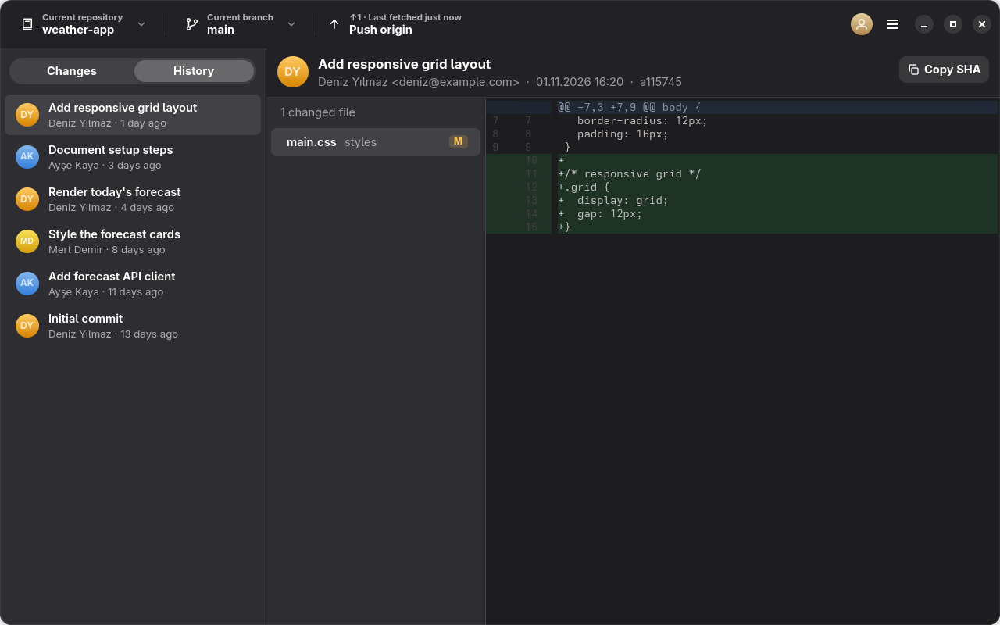
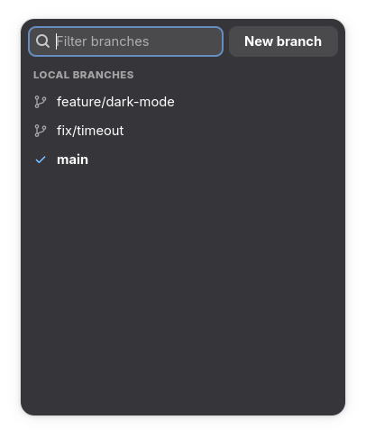
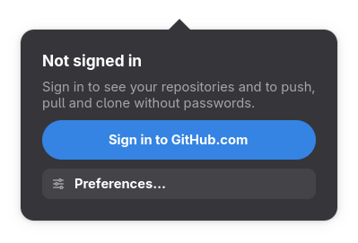

Git, Linux masaüstünde sade ve hızlı.Git on the Linux desktop, simple and fast.
GitHub Desktop'tan ilham alan, C ile yazılmış yerel bir uygulama. Değişikliklerini gör, istediğin dosyaları commit et, dallar arasında geç, tek tıkla push et.A native app inspired by GitHub Desktop, written in C. See your changes, commit exactly the files you want, switch branches and push with one click.
Her dosyanın yanında bir onay kutusu var. Sadece işaretliler commit edilir; push edene kadar Undo ile geri alabilirsin.Every file has a checkbox. Only ticked files are committed, and Undo takes it back until you push.
Dallar ve mergeBranches & merge
Aranabilir dal listesi, uzak dalları tek tıkla almak, değişikliklerini otomatik stash'leyerek dal değiştirmek, çakışmada Abort merge.A searchable branch list, one-click remote branches, switching branches with automatic stash, and Abort merge on conflicts.
Tek tuşla senkronOne-button sync
Fetch, Pull, Push ya da Publish branch: buton duruma göre ne gerektiğini söyler. Arayüz hiç donmaz.Fetch, Pull, Push or Publish branch: the button knows what's needed. The UI never freezes.
Okunaklı geçmişReadable history
Commit'ler, değişen dosyalar ve eski/yeni satır numaralı renkli diff'ler. Kaydırdıkça daha eski commit'ler yüklenir.Commits, changed files and colored diffs with old/new line numbers. Older commits load as you scroll.
GitHub hesabınYour GitHub account
Tüm repoların (organizasyonlar dahil) listede. Token sistem anahtarlığında saklanır, gh CLI girişini de tanır.All your repositories (organizations too) in one list. The token lives in your system keyring; gh CLI logins work too.
Gerçekten yerelTruly native
C ile yazılmış tek bir dosya; Electron yok, Python yok. Yerel git işlemleri libgit2 ile, açık/koyu tema sistemle uyumlu.A single binary written in C: no Electron, no Python. Local git work runs on libgit2, and light/dark follow your system.
EkranlarScreens



KurulumInstall
Şimdilik kaynaktan derleniyor. Gerekenler: GTK ≥ 4.16, libadwaita ≥ 1.8, GtkSourceView ≥ 5.16, libgit2, libsecret, json-glib, libsoup 3 ve git. Arch, CachyOS ve Fedora'nın güncel sürümlerinde hepsi hazır.For now it builds from source. You need GTK ≥ 4.16, libadwaita ≥ 1.8, GtkSourceView ≥ 5.16, libgit2, libsecret, json-glib, libsoup 3 and git. Current Arch, CachyOS and Fedora have them all.
Not: libadwaita 1.8 yalnızca yeni sürümlerde (Debian testing, Ubuntu 25.10+) var.Note: libadwaita 1.8 is only in recent releases (Debian testing, Ubuntu 25.10+).
2
Derle ve kurBuild and install
git clone https://github.com/kefy266/Git-Desktop-For-Linux.git
cd Git-Desktop-For-Linux/c
make
make install # ~/.local/bin + uygulama menüsüapp menu
3
BaşlatStart
git-desktop ~/Projects/my-repo
Ya da uygulama menüsünden Git Desktop For Linux'u aç.Or open Git Desktop For Linux from your app menu.